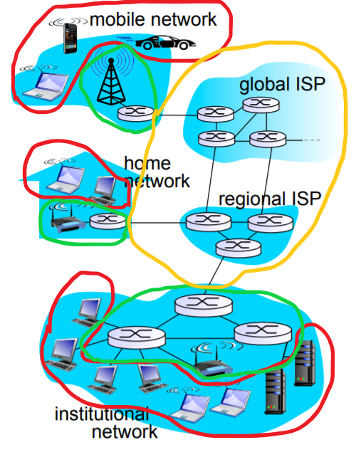

参考教材：谢希仁《计算机网络（第 7 版）》、Douglas E. Comer《计算机网络与因特网（第六版）》、James F. Kurose, Keith W. Ross《计算机网络：自顶向下方法（第 7 版）》、王道论坛《计算机网络考研复习指导》
概述
计算机网络基本知识
三网：计算机网络、电信网、有线电视网
计算机网络：以能够共享资源的方式互联起来的自治计算机系统的集合
计算机网络的最基本功能：数据通信
计算机网络的目的：资源共享
早期设计计算机网络的时候，计算机都是昂贵的大型机，而且设计的主要动机是为了资源共享。例如，网络只是被设计成将多用户终端（只有显示器和键盘）连接到一台中心的大型计算机。后来，网络又允许多用户终端可以共享外部设备（如打印机等）。
internet（互连网）：即网络的网络（network of networks），是由多个计算机网络互相连接形成的网络。
Internet（因特网）：全球最大的 internet，采用 TCP/IP 协议栈，前身是美国军方项目 ARPANET。
- ISP：Internet Service Provider. 因特网商用后，由各商业公司共同运营，这些商业公司即 ISP. ISP 拥有大量 IP 地址及网络设备，用户购买 ISP 的服务，通过 ISP 接入因特网。中国最大的 ISP 有中国电信、中国移动和中国联通。
因特网的组成结构
因特网由核心部分、边缘部分和接入网组成。
核心部分：网络和连接各网络的路由器。核心部分为边缘部分提供联通性和交换的服务。
边缘部分：所有连接在因特网核心部分上的主机，即端系统（end systems），意思是因特网末端的计算机系统，不会再从这向外延伸。我们平常在家上网用的设备（电脑、手机等）都是端系统。
接入网：连接核心部分与边缘部分的网络。
如下图，黄圈内为核心部分，绿圈内为接入网，红圈内为边缘部分。

计算机网络的分类
按作用范围分
- 个人区域网、个域网（PAN）：如两台蓝牙设备互连形成的网络，范围仅十米左右。
- 局域网（LAN）：如家里的路由器组成的接入网、学校的校园网，范围可达 1km 左右。局域网即俗话说的“内网”，与“外网”即因特网相对。
- 城域网（MAN）：如有线电视的城域网，范围大概横跨一座城市，5-50km 左右。
- 广域网（WAN）：如跨省跨国公司各分部之间建立的网络，范围达几十到几千公里。
按使用者分
- 公用网（public network）：由 ISP 拥有，供公众使用。
- 专用网（private network）：由各单位拥有，仅供单位内部使用。如军队、银行都有自己的专用网。